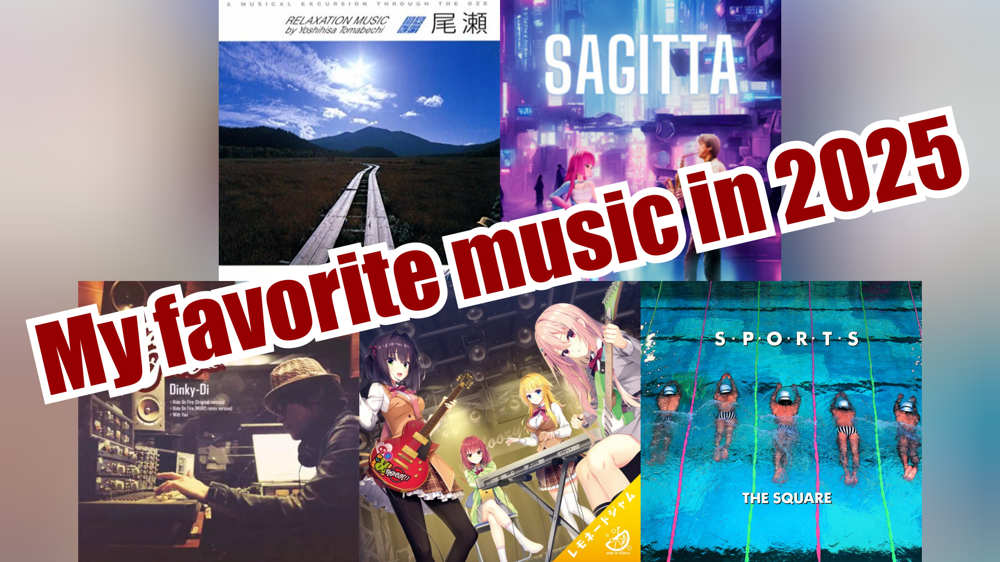

毎年 "今年の 5 曲" というテーマのアドカレに寄稿していましたが今年は無かったので、アドカレに関係なく 5 曲選んで記事にします。
2026 年に出会った曲の中で強く印象に残った 5 曲を選びました。旧譜も含むのであしからず。
去年までの記事はこちらから:
早朝のラジオ番組で出会いました。サックスがメインのイージーリスニングです。周りを邪魔することが無いので BGM としてよく流していました。
暑い時期はボーカルの入った曲を聴く気にならないので、インスト曲が多くなってしまいました。毎年 5 曲を選んでいると音楽の好みの変化を見ることができるので定点観測は大切ですね。来年もアドカレの有無に関わらず記事を書こうかな。